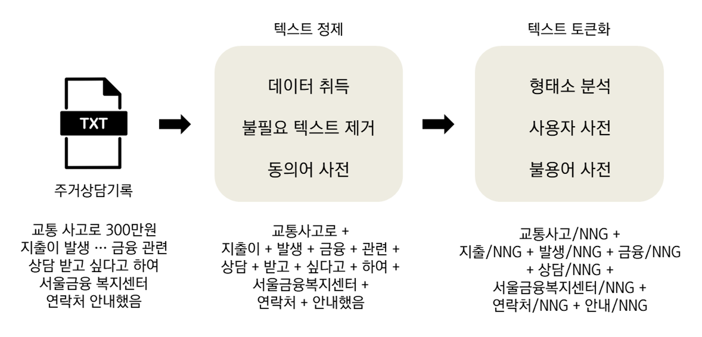
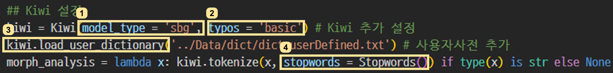

## 필요한 패키지 설치하기
!pip install pandas
!pip install tqdm
!pip install kiwipiepy텍스트 전처리는 주거상담 원형 텍스트를 정제하고 토큰화하는 작업을 말한다. 비정형 텍스트 데이터는 그대로 활용할 수 없어 취득 이후, 전처리하는 과정을 거쳐야 한다.

1. 텍스트 정제
1.1. 패키지 설치 및 데이터 불러오기
이번 작업에서 필요한 패키지를 설치하는 코드는 아래와 같다.
설치 후, 필요한 패키지를 먼저 불러온다.
## 필요한 모듈 불러오기
import json, random, re, os
import swifter
import pandas as pd
from tqdm import tqdm # 작업 프로세스 시각화
from kiwipiepy import Kiwi # 형태소분석기 모듈
from kiwipiepy.utils import Stopwords # 불용어사전 담겨있는 모듈 불러오기csv로 저장된 데이터를 불러온다. 예제 파일은 여기에서 다운로드 할 수 있다. id_f는 각 데이터 고유 ID, cons_text는 형태소 분석 할 상담 내용이다.
db_record = pd.read_csv("data/db_record_v1_sample.csv") # 데이터 불러오기| id_f | cons_text |
|---|---|
| 1 | * 재개발 임대 아파트 거주중. * 임대료 7개월 1,381,980원 체납 * 일자리를 구하는 중으로 수입이 없어 경제적으로 어려운 상황으로 인함. * 작년 20.10.30 체납 상담했던 대상자로 현재 실업급여로 180만원이 나오고 있는데, 수급자 신청해 보려 했으나, 실업급여와 중복으로 받을 수 없다고 안내를 받았다 함. * 임대료 체납 기간이 길어질수록 나중에 퇴거 명령을 받으실 수도 있다고 안내드렸더니, 이번에 빌려서 어떻게든 해결해 보려 한다고 하심. * 일자리를 구하신다고 하셔서 임대주택 입주자 분들께 일자리 상담 연계해 드리고 있는데, 필요하신지 여쭤보았더니, 자신이 직접 알아보시겠다고 하심. |
| 2 | * 청년임차보증금 이자지원사업 추천서 관련 문의전화 주심(20대 추정) * 건강보험자격득실확인서 지역가입자이며 대학생으로 소득 없음. 국세청홈택스 소득금액증명원 조회결과 2019년 아르바이트 소득 조회됨. 취업준비생 유형으로 신청 가능한지 궁금 · 취업준비생 유형으로 신청 가능 * 서울주거포털에서 추천서 신청시 거주지 주소에 현주소 기입하는 것인지 궁금 · 서울주거포털 추천서 신청시 현주소 기입 * 서울시추천서 신청과 이사 할 전월세주택 물색 중에서 어느것을 먼저 해야하는지 궁금 · 서울시추천서 유효기간 발급일로부터 3개월임을 안내 |
1.2. 불필요한 토큰 제거
원형 텍스트에서 불필요한 토큰인 기호, 태그, 등을 삭제한다. 때로는 숫자와 영어도 불필요하다고 여겨지지만 ‘1인가구’, ‘2룸’, ‘LH’, ‘SH’ 등 의미있는 토큰이 많아 삭제하지 않았다. 아래 코드로 먼저 텍스트 내 영어 표현을 모두 소문자화 한 후, 한글과 숫자, 영어 외 나머지를 공백 처리했다.
db_record['cons_text_cleaned_1'] = list(map(lambda text: re.sub(r"([^가-힣0-9a-z ])", " ", text), db_record['cons_text'].str.lower()))| cons_text | cons_text_cleaned_1 |
|---|---|
| * 재개발 임대 아파트 거주중. * 임대료 7개월 1,381,980원 체납 * 일자리를 구하는 중으로 수입이 없어 경제적으로 어려운 상황으로 인함. * 작년 20.10.30 체납 상담했던 대상자로 현재 실업급여로 180만원이 나오고 있는데, 수급자 신청해 보려 했으나, 실업급여와 중복으로 받을 수 없다고 안내를 받았다 함. * 임대료 체납 기간이 길어질수록 나중에 퇴거 명령을 받으실 수도 있다고 안내드렸더니, 이번에 빌려서 어떻게든 해결해 보려 한다고 하심. * 일자리를 구하신다고 하셔서 임대주택 입주자 분들께 일자리 상담 연계해 드리고 있는데, 필요하신지 여쭤보았더니, 자신이 직접 알아보시겠다고 하심. | 재개발 임대 아파트 거주중 임대료 7개월 1 381 980원 체납 일자리를 구하는 중으로 수입이 없어 경제적으로 어려운 상황으로 인함 작년 20 10 30 체납 상담했던 대상자로 현재 실업급여로 180만원이 나오고 있는데 수급자 신청해 보려 했으나 실업급여와 중복으로 받을 수 없다고 안내를 받았다 함 임대료 체납 기간이 길어질수록 나중에 퇴거 명령을 받으실 수도 있다고 안내드렸더니 이번에 빌려서 어떻게든 해결해 보려 한다고 하심 일자리를 구하신다고 하셔서 임대주택 입주자 분들께 일자리 상담 연계해 드리고 있는데 필요하신지 여쭤보았더니 자신이 직접 알아보시겠다고 하심 |
| * 청년임차보증금 이자지원사업 추천서 관련 문의전화 주심(20대 추정) * 건강보험자격득실확인서 지역가입자이며 대학생으로 소득 없음. 국세청홈택스 소득금액증명원 조회결과 2019년 아르바이트 소득 조회됨. 취업준비생 유형으로 신청 가능한지 궁금 · 취업준비생 유형으로 신청 가능 * 서울주거포털에서 추천서 신청시 거주지 주소에 현주소 기입하는 것인지 궁금 · 서울주거포털 추천서 신청시 현주소 기입 * 서울시추천서 신청과 이사 할 전월세주택 물색 중에서 어느것을 먼저 해야하는지 궁금 · 서울시추천서 유효기간 발급일로부터 3개월임을 안내 | 청년임차보증금 이자지원사업 추천서 관련 문의전화 주심 20대 추정 건강보험자격득실확인서 지역가입자이며 대학생으로 소득 없음 국세청홈택스 소득금액증명원 조회결과 2019년 아르바이트 소득 조회됨 취업준비생 유형으로 신청 가능한지 궁금 취업준비생 유형으로 신청 가능 서울주거포털에서 추천서 신청시 거주지 주소에 현주소 기입하는 것인지 궁금 서울주거포털 추천서 신청시 현주소 기입 서울시추천서 신청과 이사 할 전월세주택 물색 중에서 어느것을 먼저 해야하는지 궁금 서울시추천서 유효기간 발급일로부터 3개월임을 안내 |
1.3. 동의어 사전
같은 의미지만 다른 표현으로 쓰는 단어를 통일한다. 아래와 같이 구축한 동의어 사전을 활용하며, 사전은 바꿔줄 단어beforeWord, 바꿀 단어afterWord로 구성했다.
| beforeWord | afterWord | |
|---|---|---|
| 0 | 재개발 임대 | 재개발임대 |
| 1 | 재개발임대주택 | 재개발임대 |
| 2 | 서울 주거포털 | 서울주거포털 |
| 3 | 현대아산재단 | 아산사회복지재단 |
| 4 | 아산재단 | 아산사회복지재단 |
| 5 | 아산사회복지 재단 | 아산사회복지재단 |
| 6 | 아산복지재단 | 아산사회복지재단 |
‘재개발 임대’는 ’재개발’과 ’임대’가 아닌 ’재개발임대’의 다른 표현이므로 이를 통일시켰다. ’서울 주거포털’도 마찬가지 사례다. ’아산사회복지재단’은 ’현대아산재단’, ‘아산재단’ 등 다르게 쓰는 표현을 일치시켜주었다.
동의어 사전으로 상담 원문 내용을 바꾸는 코드는 아래와 같다. 함수 replace_word는 한 개의 상담 내용cons_text 열마다 동의어사전dict_synonyms에서 beforeWord와 일치하는 구간이 발견되면 afterWord로 바꾼다.
1.4. 적용
위 작업을 하는 코드는 아래와 같다.
## 구축한 동의어사전 불러오기
dict_synonyms = pd.read_csv('data/dict/dict_synonyms.csv')
## 동의어사전을 적용하는 함수 정의
def replace_word(text):
for i in range(len(dict_synonyms['beforeWord'])):
try:
if dict_synonyms['beforeWord'][i] in text: # beforeWord가 상담내용에서 발견된다면
text = text.replace(dict_synonyms['beforeWord'][i], dict_synonyms['afterWord'][i]) # 해당하는 단어의 afterWord로 바꾸어라
except Exception as e: # 에러가 있다면 멈추고 알려주어라
print(f"Error 발생 / 에러명: {e}")
print(dict_synonyms['afterWord'][i])
print(text)
return text
db_record['cons_text_cleaned_2'] = db_record['cons_text_cleaned_1'].swifter.set_npartitions(npartitions = 12).apply(lambda x: replace_word(x))| cons_text | cons_text_cleaned_2 |
|---|---|
| * 재개발 임대 아파트 거주중. * 임대료 7개월 1,381,980원 체납 * 일자리를 구하는 중으로 수입이 없어 경제적으로 어려운 상황으로 인함. * 작년 20.10.30 체납 상담했던 대상자로 현재 실업급여로 180만원이 나오고 있는데, 수급자 신청해 보려 했으나, 실업급여와 중복으로 받을 수 없다고 안내를 받았다 함. * 임대료 체납 기간이 길어질수록 나중에 퇴거 명령을 받으실 수도 있다고 안내드렸더니, 이번에 빌려서 어떻게든 해결해 보려 한다고 하심. * 일자리를 구하신다고 하셔서 임대주택 입주자 분들께 일자리 상담 연계해 드리고 있는데, 필요하신지 여쭤보았더니, 자신이 직접 알아보시겠다고 하심. | 재개발임대 아파트 거주중 임대료 7개월 1 381 980원 체납 일자리를 구하는 중으로 수입이 없어 경제적으로 어려운 상황으로 인함 작년 20 10 30 체납 상담했던 대상자로 현재 실업급여로 180만원이 나오고 있는데 수급자 신청해 보려 했으나 실업급여와 중복으로 받을 수 없다고 안내를 받았다 함 임대료 체납 기간이 길어질수록 나중에 퇴거 명령을 받으실 수도 있다고 안내드렸더니 이번에 빌려서 어떻게든 해결해 보려 한다고 하심 일자리를 구하신다고 하셔서 임대주택 입주자 분들께 일자리 상담 연계해 드리고 있는데 필요하신지 여쭤보았더니 자신이 직접 알아보시겠다고 하심 |
| * 청년임차보증금 이자지원사업 추천서 관련 문의전화 주심(20대 추정) * 건강보험자격득실확인서 지역가입자이며 대학생으로 소득 없음. 국세청홈택스 소득금액증명원 조회결과 2019년 아르바이트 소득 조회됨. 취업준비생 유형으로 신청 가능한지 궁금 · 취업준비생 유형으로 신청 가능 * 서울주거포털에서 추천서 신청시 거주지 주소에 현주소 기입하는 것인지 궁금 · 서울주거포털 추천서 신청시 현주소 기입 * 서울시추천서 신청과 이사 할 전월세주택 물색 중에서 어느것을 먼저 해야하는지 궁금 · 서울시추천서 유효기간 발급일로부터 3개월임을 안내 | 청년임차보증금 이자지원 추천서 관련 문의전화 주심 20대 추정 건강보험자격득실확인서 지역가입자이며 대학생으로 소득 없음 국세청홈택스 소득금액증명원 조회결과 2019년 아르바이트 소득 조회됨 취업준비생 유형으로 신청 가능한지 궁금 취업준비생 유형으로 신청 가능 서울주거포털에서 추천서 신청시 거주지 주소에 현주소 기입하는 것인지 궁금 서울주거포털 추천서 신청시 현주소 기입 서울시추천서 신청과 이사 할 전월세주택물색 중에서 어느것을 먼저 해야하는지 궁금 서울시추천서 유효기간 발급일로부터 3개월임을 안내 |
2. 텍스트 토큰화
2.1. 형태소분석기 Kiwi
다양한 형태소분석기 중 Kiwi를 선택했다. 빠른 속도와 준수한 정확도, 그리고 사용자사전 수정과 활용이 쉽기 때문이다. 앞의 두 장점과 분석기 설명은 여기에서 확인 가능하다.
기본 설정으로 Kiwi 분석기로 형태소 분석을 한 결과는 다음과 같다.
kiwi = Kiwi() # Kiwi 기본값 설정
kiwi.tokenize("서울주거포털에서 재개발임대 정보를 알아보셰요")[Token(form='서울', tag='NNP', start=0, len=2),
Token(form='주거', tag='NNG', start=2, len=2),
Token(form='포털', tag='NNG', start=4, len=2),
Token(form='에서', tag='JKB', start=6, len=2),
Token(form='재', tag='XPN', start=9, len=1),
Token(form='개발', tag='NNG', start=10, len=2),
Token(form='임대', tag='NNG', start=12, len=2),
Token(form='정보', tag='NNG', start=15, len=2),
Token(form='를', tag='JKO', start=17, len=1),
Token(form='알아보셰요', tag='NNG', start=19, len=5)]형태소화된 토큰은 원형form과 형태소tag, 시작위치start, 길이len으로 구성된다.
[Token(form='서울', tag='NNP', start=0, len=2),
Token(form='주거', tag='NNG', start=2, len=2),
Token(form='포털', tag='NNG', start=4, len=2),
Token(form='에서', tag='JKB', start=6, len=2),
Token(form='재', tag='XPN', start=9, len=1),
Token(form='개발', tag='NNG', start=10, len=2),
Token(form='임대', tag='NNG', start=12, len=2),
Token(form='장보', tag='NNP', start=15, len=2),
Token(form='를', tag='JKO', start=17, len=1),
Token(form='알', tag='VV', start=19, len=1),
Token(form='어', tag='EC', start=20, len=1),
Token(form='보', tag='VX', start=21, len=1),
Token(form='세', tag='EC', start=22, len=1),
Token(form='요', tag='JX', start=23, len=1)]2.2. Kiwi 추가 설정
이 모듈에서 몇가지 추가 설정을 한 코드는 다음과 같다.

1은 형태소 분석기에 활용하는 모델을 지정하고 2는 기본적인 맞춤법 검사를 하게끔 한다(자세한 정보는 여기).
4는 불용어를 걸러내준다. Stopword()은 Kiwi에서 제공하는 기본 불용어사전이다.
3은 사용자정의사전을 추가하는 것이다. 위 결과에서 보이듯 사용자정의사전을 추가하지 않으면 ’서울주거포털’은 ’서울 + 주거 + 포털’로 나눠지게 된다. 사용자정의사전을 만드는 코드는 아래와 같다.
## 동의어사전에서 추출하기
dict_synonyms = pd.read_csv('data/dict/dict_synonyms.csv') # 동의어사전 불러오기
list_userDefined_synonyms = (dict_synonyms['afterWord'].str.strip().unique() + "\tNNG\t9").tolist() # 사용자 정의 사전 포맷으로 변경
## 사용자 정의 사전 불러오기
dict_add = pd.read_table("data/dict/dict_userDefined_madeByMe.txt") # 추가 사전 불러오기
list_userDefined_add = (pd.read_table("data/dict/dict_userDefined_madeByMe.txt", header = None, sep = "-")[0] + "\t9").tolist() # 사용자 정의 사전 포맷으로 변경
## 위 두 사전 합치기
dict_userDefined = pd.DataFrame(pd.DataFrame(list_userDefined_synonyms + list_userDefined_add)[0].unique()) # 두 list 결합
dict_userDefined.to_csv('data/dict/dict_userDefined.txt', index = False, header = False) # 새로운 사용자 정의 사전 저장하기동의어 사전 부분은 afterWord를 고유명사화(NNG) 하는 작업이다. 동의어 사전에서 지정한 단어들은 ‘1인가구’, ‘미성년자’, ‘늘푸른돌봄센터’ 등으로 대부분 명사에 속하기 때문이다.
따로 만든 사용자 정의 사전에는 명사 외 사용자 정의를 해줄 단어가 들어있다. ‘통보함’이 ’통보함(NNG/명사)’가 아니라 ’통보/NNG + 하/VV + 다/EF’, ’연락키로’가 ’연락키로(NNG/명사)’가 아니라 ’연락/NNG + 하/XSV + 기/ETN + 로/JKB’로 형태소화 되게끔 만들었다.
추가 설정을 한 형태소 분석의 결과는 다음과 같다.
## Kiwi 설정
kiwi = Kiwi(model_type = 'sbg', typos = 'basic') # Kiwi 추가 설정
kiwi.load_user_dictionary('data/dict/dict_userDefined.txt') # 사용자사전 추가
kiwi.tokenize("서울주거포털에서 재개발임대 정보를 알아보셰요", stopwords = Stopwords())[Token(form='서울주거포털', tag='NNG', start=0, len=6),
Token(form='재개발임대', tag='NNG', start=9, len=5),
Token(form='정보', tag='NNG', start=15, len=2),
Token(form='알', tag='VV', start=19, len=1),
Token(form='보', tag='VX', start=21, len=1),
Token(form='세', tag='EC', start=22, len=1),
Token(form='요', tag='JX', start=23, len=1)]2.3. 적용
위 작업을 적용한 결과는 다음과 같다.
## Kiwi 설정
kiwi = Kiwi(model_type = 'sbg', typos = 'basic') # Kiwi 추가 설정
kiwi.load_user_dictionary('data/dict/dict_userDefined.txt') # 사용자사전 추가
morph_analysis = lambda x: kiwi.tokenize(x, stopwords = Stopwords()) if type(x) is str else None # 형태소 분석
db_record['cons_text_posTagged_kiwi'] = db_record['cons_text_cleaned_2'].swifter.apply(morph_analysis)| cons_text | cons_text_posTagged_kiwi |
|---|---|
| * 재개발 임대 아파트 거주중. * 임대료 7개월 1,381,980원 체납 * 일자리를 구하는 중으로 수입이 없어 경제적으로 어려운 상황으로 인함. * 작년 20.10.30 체납 상담했던 대상자로 현재 실업급여로 180만원이 나오고 있는데, 수급자 신청해 보려 했으나, 실업급여와 중복으로 받을 수 없다고 안내를 받았다 함. * 임대료 체납 기간이 길어질수록 나중에 퇴거 명령을 받으실 수도 있다고 안내드렸더니, 이번에 빌려서 어떻게든 해결해 보려 한다고 하심. * 일자리를 구하신다고 하셔서 임대주택 입주자 분들께 일자리 상담 연계해 드리고 있는데, 필요하신지 여쭤보았더니, 자신이 직접 알아보시겠다고 하심. | [Token(form='재개발임대', tag='NNG', start=2, len=5), Token(form='아파트', tag='NNG', start=8, len=3), Token(form='거주', tag='NNG', start=12, len=3), Token(form='임대료', tag='NNG', start=19, len=3), Token(form='7', tag='SN', start=23, len=1), Token(form='개월', tag='NNB', start=24, len=2), Token(form='1', tag='SN', start=27, len=1), Token(form='381', tag='SN', start=29, len=3), Token(form='980', tag='SN', start=33, len=3), Token(form='체납', tag='NNG', start=38, len=2), Token(form='일자리', tag='NNG', start=43, len=3), Token(form='구하', tag='VV', start=48, len=2), Token(form='중', tag='NNG', start=52, len=1), Token(form='수입', tag='NNG', start=56, len=2), Token(form='경제', tag='NNG', start=63, len=2), Token(form='어렵', tag='VA-I', start=69, len=3), Token(form='상황', tag='NNG', start=73, len=2), Token(form='인하', tag='VV', start=78, len=2), Token(form='ᆷ', tag='ETM', start=79, len=1), Token(form='작년', tag='NNG', start=84, len=2), Token(form='20', tag='SN', start=87, len=2), Token(form='10', tag='SN', start=90, len=2), Token(form='30', tag='SN', start=93, len=2), Token(form='체납', tag='NNG', start=96, len=2), Token(form='상담', tag='NNG', start=99, len=2), Token(form='대상자', tag='NNG', start=104, len=3), Token(form='현재', tag='MAG', start=109, len=2), Token(form='실업급여', tag='NNG', start=112, len=4), Token(form='180', tag='SN', start=118, len=3), Token(form='나오', tag='VV', start=125, len=2), Token(form='데', tag='NNB', start=131, len=1), Token(form='수급자', tag='NNG', start=134, len=3), Token(form='신청', tag='NNG', start=138, len=2), Token(form='보', tag='VX', start=142, len=1), Token(form='려', tag='EC', start=143, len=1), Token(form='으나', tag='EC', start=146, len=2), Token(form='실업급여', tag='NNG', start=150, len=4), Token(form='중복', tag='NNG', start=156, len=2), Token(form='받', tag='VV-R', start=161, len=1), Token(form='안내', tag='NNG', start=170, len=2), Token(form='받', tag='VV-R', start=174, len=1), Token(form='함', tag='NNP', start=178, len=1), Token(form='임대료', tag='NNG', start=184, len=3), Token(form='체납', tag='NNG', start=188, len=2), Token(form='기간', tag='NNG', start=191, len=2), Token(form='길어지', tag='VV', start=195, len=3), Token(form='ᆯ수록', tag='EC', start=197, len=3), Token(form='나중', tag='NNG', start=201, len=2), Token(form='퇴거', tag='NNG', start=205, len=2), Token(form='명령', tag='NNG', start=208, len=2), Token(form='받', tag='VV-R', start=212, len=1), Token(form='으시', tag='EP', start=213, len=2), Token(form='있', tag='VA', start=219, len=1), Token(form='안내', tag='NNG', start=223, len=2), Token(form='드리', tag='VV', start=225, len=2), Token(form='더니', tag='EC', start=227, len=2), Token(form='이번', tag='NNG', start=231, len=2), Token(form='빌리', tag='VV', start=235, len=2), Token(form='어떻게', tag='MAG', start=239, len=3), Token(form='든', tag='JX', start=242, len=1), Token(form='해결', tag='NNG', start=244, len=2), Token(form='보', tag='VX', start=248, len=1), Token(form='려', tag='EC', start=249, len=1), Token(form='ᆫ다고', tag='EC', start=251, len=3), Token(form='시', tag='EP', start=255, len=2), Token(form='일자리', tag='NNG', start=263, len=3), Token(form='구하', tag='VV', start=268, len=2), Token(form='시', tag='EP', start=270, len=1), Token(form='ᆫ다고', tag='EC', start=270, len=3), Token(form='시', tag='EP', start=275, len=1), Token(form='임대주택', tag='NNG', start=278, len=4), Token(form='입주자', tag='NNG', start=283, len=3), Token(form='분', tag='NNB', start=287, len=1), Token(form='께', tag='JKB', start=289, len=1), Token(form='일자리', tag='NNG', start=291, len=3), Token(form='상담', tag='NNG', start=295, len=2), Token(form='연계', tag='NNG', start=298, len=2), Token(form='드리', tag='VX', start=302, len=2), Token(form='데', tag='NNB', start=308, len=1), Token(form='필요', tag='NNG', start=311, len=2), Token(form='시', tag='EP', start=314, len=1), Token(form='ᆫ지', tag='EC', start=314, len=2), Token(form='여쭈', tag='VV', start=317, len=2), Token(form='보', tag='VX', start=319, len=1), Token(form='더니', tag='EC', start=321, len=2), Token(form='자신', tag='NNG', start=325, len=2), Token(form='직접', tag='MAG', start=329, len=2), Token(form='알아보', tag='VV', start=332, len=3), Token(form='시', tag='EP', start=335, len=1), Token(form='시', tag='EP', start=340, len=2)] |
| * 청년임차보증금 이자지원사업 추천서 관련 문의전화 주심(20대 추정) * 건강보험자격득실확인서 지역가입자이며 대학생으로 소득 없음. 국세청홈택스 소득금액증명원 조회결과 2019년 아르바이트 소득 조회됨. 취업준비생 유형으로 신청 가능한지 궁금 · 취업준비생 유형으로 신청 가능 * 서울주거포털에서 추천서 신청시 거주지 주소에 현주소 기입하는 것인지 궁금 · 서울주거포털 추천서 신청시 현주소 기입 * 서울시추천서 신청과 이사 할 전월세주택 물색 중에서 어느것을 먼저 해야하는지 궁금 · 서울시추천서 유효기간 발급일로부터 3개월임을 안내 | [Token(form='청년', tag='NNG', start=2, len=2), Token(form='임차보증금', tag='NNG', start=4, len=5), Token(form='이자지원', tag='NNG', start=10, len=4), Token(form='추천서', tag='NNG', start=15, len=3), Token(form='관련', tag='NNG', start=19, len=2), Token(form='문의', tag='NNG', start=22, len=2), Token(form='전화', tag='NNG', start=24, len=2), Token(form='주', tag='VV', start=27, len=2), Token(form='시', tag='EP', start=27, len=2), Token(form='20', tag='SN', start=30, len=2), Token(form='대', tag='NNB', start=32, len=1), Token(form='추정', tag='NNG', start=34, len=2), Token(form='건강', tag='NNG', start=40, len=2), Token(form='보험', tag='NNG', start=42, len=2), Token(form='자격', tag='NNG', start=44, len=2), Token(form='득실', tag='NNG', start=46, len=2), Token(form='확인서', tag='NNG', start=48, len=3), Token(form='가입자', tag='NNG', start=54, len=3), Token(form='대학생', tag='NNG', start=60, len=3), Token(form='소득', tag='NNG', start=66, len=2), Token(form='음', tag='EC', start=70, len=1), Token(form='국세청', tag='NNG', start=73, len=3), Token(form='홈텍스', tag='NNG', start=76, len=3), Token(form='소득', tag='NNG', start=80, len=2), Token(form='금액', tag='NNG', start=82, len=2), Token(form='증명', tag='NNG', start=84, len=2), Token(form='원', tag='NNG', start=86, len=1), Token(form='조회', tag='NNG', start=88, len=2), Token(form='결과', tag='NNG', start=90, len=2), Token(form='2019', tag='SN', start=93, len=4), Token(form='아르바이트', tag='NNG', start=99, len=5), Token(form='소득', tag='NNG', start=105, len=2), Token(form='조회됨', tag='NNG', start=108, len=3), Token(form='취업', tag='NNG', start=113, len=2), Token(form='준비', tag='NNG', start=115, len=2), Token(form='생', tag='XSN', start=117, len=1), Token(form='유형', tag='NNG', start=119, len=2), Token(form='신청', tag='NNG', start=124, len=2), Token(form='가능', tag='NNG', start=127, len=2), Token(form='ᆫ지', tag='EC', start=129, len=2), Token(form='궁금', tag='NNG', start=132, len=2), Token(form='취업', tag='NNG', start=137, len=2), Token(form='준비', tag='NNG', start=139, len=2), Token(form='생', tag='XSN', start=141, len=1), Token(form='유형', tag='NNG', start=143, len=2), Token(form='신청', tag='NNG', start=148, len=2), Token(form='가능', tag='NNG', start=151, len=2), Token(form='서울주거포털', tag='NNG', start=156, len=6), Token(form='추천서', tag='NNG', start=165, len=3), Token(form='신청', tag='NNG', start=169, len=2), Token(form='시', tag='NNB', start=171, len=1), Token(form='거주지', tag='NNG', start=173, len=3), Token(form='주소', tag='NNG', start=177, len=2), Token(form='현', tag='MM', start=181, len=1), Token(form='주소', tag='NNG', start=182, len=2), Token(form='기입', tag='NNG', start=185, len=2), Token(form='ᆫ지', tag='EC', start=191, len=2), Token(form='궁금', tag='XR', start=194, len=2), Token(form='서울주거포털', tag='NNG', start=199, len=6), Token(form='추천서', tag='NNG', start=206, len=3), Token(form='신청', tag='NNG', start=210, len=2), Token(form='시', tag='NNB', start=212, len=1), Token(form='현주소', tag='NNG', start=214, len=3), Token(form='기입', tag='NNG', start=218, len=2), Token(form='서울시', tag='NNP', start=223, len=3), Token(form='추천서', tag='NNG', start=226, len=3), Token(form='신청', tag='NNG', start=230, len=2), Token(form='이사', tag='NNG', start=234, len=2), Token(form='전월세', tag='NNG', start=239, len=3), Token(form='주택물색', tag='NNG', start=242, len=4), Token(form='어느', tag='MM', start=251, len=2), Token(form='먼저', tag='MAG', start=256, len=2), Token(form='지', tag='NNB', start=263, len=1), Token(form='궁금', tag='NNG', start=265, len=2), Token(form='서울시', tag='NNP', start=270, len=3), Token(form='추천서', tag='NNG', start=273, len=3), Token(form='유효', tag='NNG', start=277, len=2), Token(form='기간', tag='NNG', start=279, len=2), Token(form='발급', tag='NNG', start=282, len=2), Token(form='로부터', tag='JKB', start=285, len=3), Token(form='3', tag='SN', start=289, len=1), Token(form='개월', tag='NNB', start=290, len=2), Token(form='ᆷ', tag='ETN', start=292, len=1), Token(form='안내', tag='NNG', start=295, len=2)] |
3. 불용어 제거 및 형태소 결합
3.1. 불용어 사전
kiwi 기본 불용어 사전에서 거르지 못한 불용어를 거르기 위해 사전을 만든다. ‘대상자’와 ’서비스’, ‘주거’ 등은 자주 등장하지만 크게 의미있는 단어가 아니다. 지역명과 상담사명도 마찬가지다.
| type | word | pos | |
|---|---|---|---|
| 0 | 일반 | 대상자 | NNG |
| 1 | 일반 | 서비스 | NNG |
| 2 | 일반 | 주거 | NNG |
| 3 | 일반 | 주택 | NNG |
| 4 | 일반 | 가구 | NNG |
| 5 | 지역명 | 잠실2동 | NNG |
| 6 | 지역명 | 잠실3동 | NNG |
| 7 | 상담사명 | 박상준 | NNG |
| 8 | 상담사명 | 이종현 | NNG |
3.2. 한글자 사전
단어가 한글자지만 중요한 것을 모아둔 사전이다. 보통 한글자는 의미가 잘 없다. 하지만 ‘돈’은 경제적 상황을 서술할 때 사용하며, ’좁’은 ’좁다’, ‘좁은 집’으로, ’낡’은 ’낡다’ 등으로 활용된다. 이 같은 의미있는 한글자는 불용어로 걸러지지 않게끔 한다. 형태소 분석한 토큰이 아주 짧은 경우는 보통 제거한다.
| word | |
|---|---|
| 0 | 돈 |
| 1 | 좁 |
| 2 | 낡 |
| 3 | 커 |
| 4 | 크 |
| 5 | 작 |
3.3. 적용
위 두 사전과 함께 형태소화된 토큰을 결합하는 단계는 아래와 같다.
## 형태소분석된 것들을 join
dict_stopword = pd.read_csv('data/dict/dict_stopword.csv')
dict_oneChar = pd.read_csv("data/dict/dict_oneChar.csv")
## 품사 정의하기
list_pos_all = ("N", "V", "M", "J", "E", "X") # 주요 품사 모두
list_pos_main = ("N", "V") # 명사, 동사, 형용사만
## 불용어 제거하고 형태소 결합하기
def tokenToText(tokens):
textJoinedMain = []
textJoinedAll = []
for token, pos, _, _ in tokens:
if (token not in list(dict_stopword['word']) and ( len(token) > 1 or (len(token) == 1 and token in list(dict_oneChar['word']) ) )):
if pos.startswith('V'): token = token + '다' # 동사라면 뒤에 '다'를 붙여서 자연스럽게 만들기
if pos.startswith(list_pos_main) : textJoinedMain.append(token)
if pos.startswith(list_pos_all) : textJoinedAll.append(token)
out = pd.Series([' '.join(textJoinedAll), ' '.join(textJoinedMain)])
return out
db_record[['cons_text_posTagged_all', 'cons_text_posTagged_main']] = db_record['cons_text_posTagged_kiwi'].swifter.set_npartitions(npartitions = 6).apply(lambda x: tokenToText(x))| cons_text | cons_text_posTagged_main |
|---|---|
| * 재개발 임대 아파트 거주중. * 임대료 7개월 1,381,980원 체납 * 일자리를 구하는 중으로 수입이 없어 경제적으로 어려운 상황으로 인함. * 작년 20.10.30 체납 상담했던 대상자로 현재 실업급여로 180만원이 나오고 있는데, 수급자 신청해 보려 했으나, 실업급여와 중복으로 받을 수 없다고 안내를 받았다 함. * 임대료 체납 기간이 길어질수록 나중에 퇴거 명령을 받으실 수도 있다고 안내드렸더니, 이번에 빌려서 어떻게든 해결해 보려 한다고 하심. * 일자리를 구하신다고 하셔서 임대주택 입주자 분들께 일자리 상담 연계해 드리고 있는데, 필요하신지 여쭤보았더니, 자신이 직접 알아보시겠다고 하심. | 재개발임대 아파트 거주 임대료 체납 일자리 구하다 수입 경제 어렵다 상황 인하다 작년 체납 상담 실업급여 나오다 수급자 신청 실업급여 중복 안내 임대료 체납 기간 길어지다 나중 퇴거 명령 안내 드리다 빌리다 해결 일자리 구하다 임대주택 입주자 일자리 상담 연계 드리다 필요 여쭈다 알아보다 |
| * 청년임차보증금 이자지원사업 추천서 관련 문의전화 주심(20대 추정) * 건강보험자격득실확인서 지역가입자이며 대학생으로 소득 없음. 국세청홈택스 소득금액증명원 조회결과 2019년 아르바이트 소득 조회됨. 취업준비생 유형으로 신청 가능한지 궁금 · 취업준비생 유형으로 신청 가능 * 서울주거포털에서 추천서 신청시 거주지 주소에 현주소 기입하는 것인지 궁금 · 서울주거포털 추천서 신청시 현주소 기입 * 서울시추천서 신청과 이사 할 전월세주택 물색 중에서 어느것을 먼저 해야하는지 궁금 · 서울시추천서 유효기간 발급일로부터 3개월임을 안내 | 청년 임차보증금 이자지원 추천서 문의 전화 추정 건강 보험 자격 득실 확인서 가입자 대학생 소득 국세청 홈텍스 소득 금액 증명 조회 결과 아르바이트 소득 조회됨 취업 준비 유형 신청 가능 궁금 취업 준비 유형 신청 가능 서울주거포털 추천서 신청 거주지 주소 주소 기입 서울주거포털 추천서 신청 현주소 기입 서울시 추천서 신청 이사 전월세 주택물색 궁금 서울시 추천서 유효 기간 발급 안내 |
끝으로
위 과정을 종합한 코드는 여기에서 다운로드 가능하다.